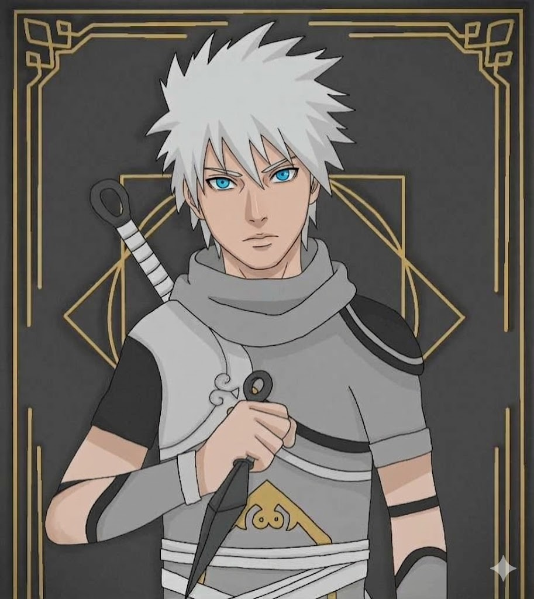

Fiche de Personnage · 風の国
[ Genin de Sunagakure ]
« L'information est le nerf de la guerre. »

Yukio Kuran possède des cheuveux décoloré, des yeux bleu pâle et une silhouette élancée. Il porte généralement une tenue de ninja légère adaptée au climat désertique, avec des tons sable et des accessoires en cuir. Sa démarche est fluide et silencieuse, témoignant de son entraînement rigoureux.
Yukio est un jeune ninja calme et réfléchi, doté d'une grande curiosité intellectuelle. Il préfère observer et analyser les situations avant d'agir, ce qui lui confère une maturité surprenante pour son âge. Malgré son apparence réservée, il est profondément loyal envers ses amis et son village, prêt à tout pour les protéger. En revanche il peut se montrer distant et méfiant envers les étrangers.
Yukio Kuran est né dans une famille modeste de Sunagakure, un village caché situé au cœur du désert. Dès son plus jeune âge, il a montré une grande curiosité pour le monde qui l'entourait, passant des heures à observer les étoiles et à écouter les histoires des anciens du village. Ses parents, bien que issu de la classe moyenne, ont toujours encouragé son désir d'apprendre et de découvrir. Ca mère était une médecin respectée, tandis que son père travaillait comme marchand itinérant, lui permettant d'entendre des récits de terres lointaines et de cultures diverses. Cette exposition précoce à la diversité du monde a profondément influencé la vision de Yukio, lui donnant un désir ardent de comprendre les différentes facettes de la vie. En revanche, lui son ambition n'était pas de marcher dans les pas de son père ou de sa mère lui ce qu'il idolatrait c'était les shinobi qui veillait à la protection des habitant du pays du sable. Il voulait devenir comme eux. Il avait comme exemple son oncle, un ninja ayant pris le chemin de l'infiltratio et le scoutisme, qui lui racontait souvent ses missions et les aventures qu'il avait vécu. Ces histoires ont captivé l'imagination de Yukio et ont renforcé son désir de suivre une voie similaire. Cependant, malgré son enthousiasme, il a également été confronté à des défis et des doutes, se demandant s'il serait à la hauteur des attentes et s'il pourrait un jour égaler les exploits de son oncle.
L'oncle de Yukio, voyant son intérêt pour le monde des shinobi, a décidé de le prendre sous son aile et de lui enseigner les bases du ninjutsu. Dès l'âge de 6 ans, Yukio a commencé un entraînement rigoureux qui comprenait des exercices physiques, des techniques de furtivité et d'observation, ainsi que l'étude des différentes stratégies de combat. Son oncle lui a également appris l'importance de la discipline, de la patience et du respect envers les autres. Yukio a rapidement montré des progrès remarquables, maîtrisant les techniques de base assez rapidement. Cependant, il a également été confronté à des moments de doute et de frustration, se demandant s'il serait capable de suivre le rythme exigeant de l'entraînement. Malgré ces défis, il a persévéré avec détermination, motivé par son désir de protéger ceux qu'il aime et de devenir un shinobi digne de ce nom. pendant plusieurs année l'objectif était de le former pour être accepté au seins de l'académie de Sunagakure, le premier grand pas vers son rêve de devenir un ninja. Il a travaillé sans relâche pour améliorer ses compétences, passant des heures à s'entraîner dans les dunes du désert et à étudier les techniques de combat. Son oncle lui a également enseigné l'importance de la stratégie et de la réflexion tactique, lui montrant comment analyser les situations et prendre des décisions éclairées sur le champ de bataille. Grâce à son dévouement et à son travail acharné, Yukio a finalement réussi à être accepté à l'académie, marquant le début d'une nouvelle étape dans son parcours en tant que shinobi.
Le premier jour, l'oncle de Yukio l'a accompagné à l'académie, lui donnant des conseils pour s'adapter à ce nouvel environnement. Yukio a rapidement fait la connaissance de ses camarades de classe, formant des amitiés solides avec certains d'entre eux. Cependant, il a également été confronté à des rivalités et à des défis, se retrouvant parfois en compétition avec d'autres élèves pour prouver sa valeur. Malgré ces obstacles, Yukio a continué à travailler dur, déterminé à exceller dans ses études et à devenir un shinobi respecté. Il a participé à divers exercices et missions d'entraînement, mettant en pratique les compétences qu'il avait apprises avec son oncle et développant de nouvelles techniques sous la supervision de ses instructeurs. Au fil du temps, il a gagné en confiance et en compétence, se forgeant une réputation de ninja prometteur au sein de l'académie. Les années à l'academie n'ont pas été marqué de grand fait, il était dans la moyenne de sa classe, il n'était pas le meilleur mais il n'était pas le pire non plus. Il était un élève sérieux et appliqué, mais il avait du mal à se démarquer parmi ses pairs. Cependant, il a continué à travailler dur, sachant que la persévérance et la détermination étaient des qualités essentielles pour réussir en tant que shinobi. Malgré les hauts et les bas de son parcours à l'académie, Yukio est resté concentré sur son objectif ultime de devenir un ninja digne de ce nom, prêt à relever tous les défis qui se présenteraient à lui sur le chemin de sa destinée.
Le jour de l'examen de graduation, Yukio était à la fois nerveux et excité. Il avait travaillé dur pendant des années pour atteindre ce moment, et il était déterminé à réussir. L'examen consistait en une série d'épreuves conçues pour tester les compétences physiques, mentales et tactiques des candidats. Yukio a affronté chaque épreuve avec détermination, mettant en pratique tout ce qu'il avait appris au cours de son entraînement. Malgré les défis et les obstacles, il a réussi à surmonter chaque épreuve avec succès, impressionnant les examinateurs par sa compétence et sa résilience. À la fin de l'examen, Yukio a été officiellement reconnu comme un genin de Sunagakure, marquant le début de sa carrière en tant que shinobi. Il était fier de ce qu'il avait accompli, mais il savait que ce n'était que le début de son voyage, et qu'il y avait encore beaucoup à apprendre et à accomplir dans le monde des shinobi.
La loyauté envers ses amis, sa famille et son village est au cœur de la philosophie de Yukio. Il croit fermement que la force d'un shinobi réside dans les liens qu'il tisse avec les autres, et il est prêt à tout pour protéger ceux qu'il aime, même au péril de sa propre vie.
La justesse est un principe fondamental dans la philosophie de Yukio. Il croit fermement que les actions doivent être guidées par un code moral strict, et il s'efforce toujours de faire ce qui est juste, même lorsque cela lui coûte.
La voie est un principe central dans la philosophie de Yukio. Il croit fermement que le chemin de l'expertise et de la maîtrise est un processus continu d'apprentissage et d'amélioration, et il s'efforce toujours de progresser sur ce chemin, même face aux difficultés.
"La vraie force d'un shinobi ne réside pas dans sa puissance, mais dans sa loyauté et sa détermination."
En diffusant un fin voile de chakra invisible dans les airs, Yukio crée une sphère de perception autour de lui. Toute signature chakrique présente dans ce rayon — alliés, ennemis, animaux — remonte à sa conscience sous forme d'une cartographie mentale instantanée. La portée et la précision augmentent avec la maîtrise.
Yukio appose discrètement un micro-sceau de chakra sur une cible — via un effleurment, un objet ou une particule portée par le vent. Ce fil de chakra quasi indétectable permet de suivre les déplacements de la cible à distance, de ressentir son niveau de chakra en temps réel, et d'anticiper ses intentions sans jamais se trahir.
Technique complémentaire indispensable à tout éclaireur : en comprimant et masquant son propre flux de chakra, Yukio devient imperceptible aux sens élargis des ninjas entraînés. Un fantôme sur le champ de bataille — qui observe, note, puis disparaît sans avoir laissé la moindre trace détectable.
L'objectif à terme est de crée une section dédiée au renseignement étant spécialsié dans la prise d'information lors de guerre ou de mission assez complexes. Leurs objectifs serais aussi de tenir des registre d'information sur les pays et leurs ninja sunakagure compris.
Au-delà des jutsu, Yukio cherche à tisser un réseau humain d'informateurs, de contacts et d'agents dormants disséminés à travers les pays. La vraie puissance d'un éclaireur ne réside pas dans ses poings, mais dans ce qu'il sait — et dans ce que l'ennemi ignore qu'il sait.